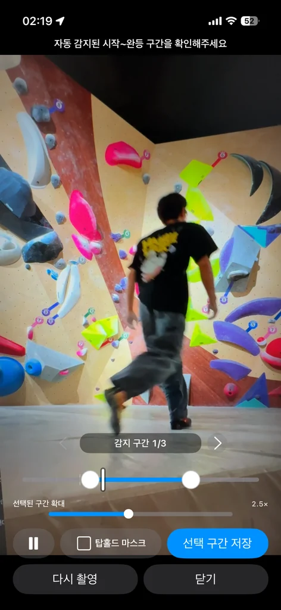
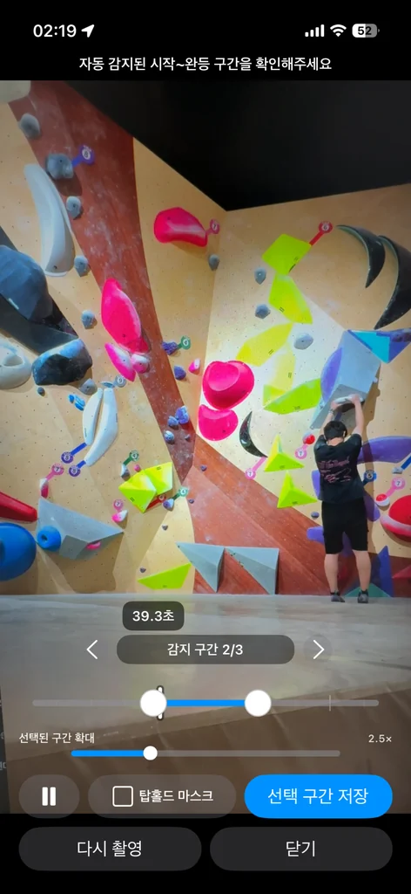
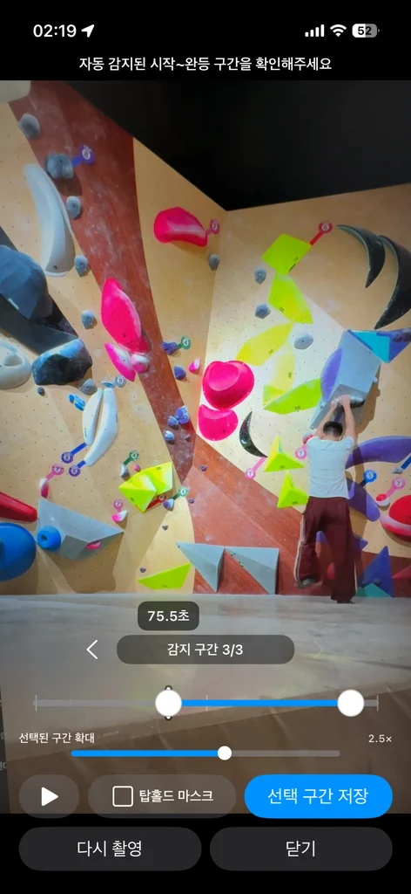
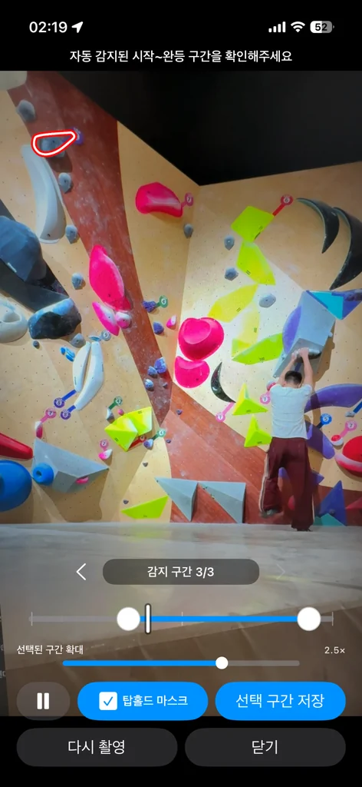
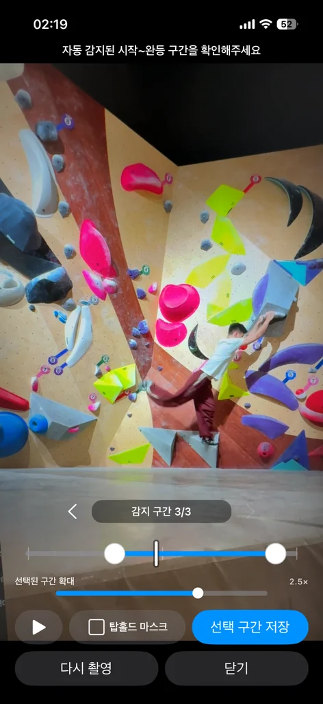
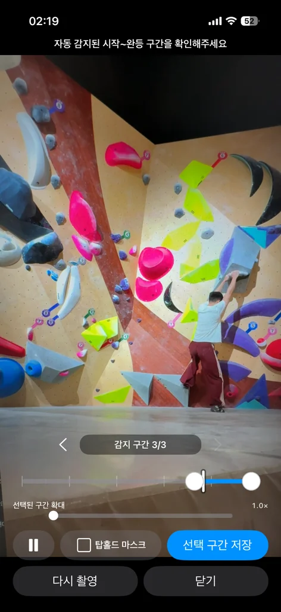

한 번의 연속 녹화에서 여러 등반 시도의 원시 구간을 보존하고, 촬영 종료 후 개별 클립 후보로 정리합니다.
Solo Product Case Study · Strategy · UX · iOS/Android Engineering · Release
클라이밍 촬영의 반복 작업을,
온디바이스 자동화로 줄였습니다.
TopOut은 연속 촬영 영상에서 등반의 시작과 완등 후보를 자동 추출하고, 검토·정밀 편집·재촬영을 하나의 흐름으로 연결한 iOS·Android 앱입니다.
ON-DEVICE AI
영상·관절 데이터 외부 전송 없음

AUTO SEGMENT
시작 · 완등 후보 · 다음 시도 탐지
01 · PRODUCT FILM
약 1분으로 확인하는
TopOut의 핵심 경험
촬영 준비부터 자동 구간 탐지, 결과 검토와 재촬영까지 제품의 전체 사용 흐름을 세로형 프로모션 영상으로 구성했습니다.
1080 × 19209:16 Vertical약 1분
VERTICAL PRODUCT FILM · 1080 × 1920
02 · OVERVIEW
기술을 시연하는 데서 끝내지 않고,
촬영 전 과정을 하나의 제품 흐름으로 설계했습니다
클라이머가 반복적으로 수행하던 녹화 조작, 구간 탐색, 편집, 재촬영을 하나의 세션으로 연결했습니다. 자동화는 결과를 강제하지 않고, 사용자가 빠르게 검토하고 보정할 수 있는 편집 시작점으로 제공합니다.
MobileSAM, Motion Detection, Pose Estimation을 단계적으로 실행해 장시간 촬영의 추론 비용을 제어합니다.
자동 감지 결과를 구간 확대와 0.1초 미세 조정으로 보정하고, 동일한 촬영 조건으로 즉시 재시도합니다.
Scope제품 전략 · UX 설계 · iOS/Android 개발 · QA · 배포 운영
iOSSwift · UIKit · AVFoundation · Vision · Core ML
AndroidKotlin · Jetpack Compose · CameraX · LiteRT · ONNX Runtime
ReleaseiOS Archive · Android AAB · Closed Testing · Privacy & License Compliance
APP FLOW
촬영 조건과 매트 경계를 확인한 뒤
한 번의 연속 녹화를 시작합니다


03 · PROBLEM
클라이밍 세션의 기록 과정은
여러 개의 수동 작업으로 분절돼 있었습니다
혼자 촬영하는 사용자는 매 시도마다 녹화를 조작하고, 긴 원본에서 등반 구간을 다시 찾은 뒤 편집과 재촬영을 반복해야 했습니다.
촬영 조작이 운동 흐름을 방해
등반 전후로 휴대폰까지 이동해야 해 세션의 리듬과 집중이 끊겼습니다.
긴 원본에서 유효 구간을 수동 탐색
대기와 이동 장면이 포함된 영상에서 각 시도의 시작과 종료를 직접 찾아야 했습니다.
분석과 재시도 사이의 컨텍스트 손실
실패 원인을 확인한 뒤 같은 앵글로 다시 촬영하려면 매트선과 카메라 설정을 반복해야 했습니다.
04 · SOLUTION
비용이 낮은 탐색에서 시작해,
판단이 필요한 시점에만 자세 추론을 실행했습니다
매트 경계를 공간 기준으로 정의하고, 제한된 영역의 프레임 변화로 사람 후보를 찾은 뒤, 포즈와 매트의 상대 위치로 등반 상태를 검증하는 계층형 파이프라인을 설계했습니다.
01MobileSAM70·80·90·95% 프롬프트에서 매트 후보를 분할하고 유효 경계를 선택
02Motion Detection160px luma 프레임을 직전 분석 프레임과 비교해 ROI를 생성
03Pose Estimation매트 대비 관절 위치로 시작·완등 후보·복귀·유실 상태를 판정
04Segment Review원시 구간을 보존한 뒤 사용자 검토와 정밀 트리밍으로 확정
기존 방식TopOut
등반마다 녹화를 시작하고 종료한 세션을 연속 촬영하고 시도별 타임스탬프를 기록
대기 장면이 포함된 원본을 직접 탐색시작과 완등 후보를 자동 제안
짧은 간격의 시도가 하나로 합쳐짐유효한 원시 구간은 간격과 관계없이 개별 보존
긴 영상에서 정밀 편집이 어려움확대 타임라인과 0.1초 미세 조정 제공
05 · ITERATIONS
필드 테스트에서 관찰한 실패를
파이프라인 구조와 상태 정책에 반영했습니다
환경별 임계값을 덧붙이는 대신, 오탐과 미탐이 발생하는 원인을 분리하고 모델 선택·탐색 범위·상태 전환 규칙을 재설계했습니다.
01 · MAT DETECTION
규칙 기반 경계 탐지의 한계를 확인하고,
영역 분할 기반 후보 선택으로 전환했습니다
INITIAL APPROACH
색상·밝기 차이와 하단 영역의 균일도를 이용해 경계를 추정했지만, 큰 볼륨·그림자·벽 재질 변화가 강한 경계로 오인됐습니다.
FINAL DECISION
MobileSAM 임베딩을 한 번 생성한 뒤 70·80·90·95% 높이의 프롬프트를 디코딩하고, 구조적 조건을 통과한 후보 중 가장 높은 상단 경계를 선택했습니다.
- 가로 점유율 40% 이상, 최상단 위치 50% 이하, 경계 기울기 15° 이하 조건으로 후보 필터링
- 선택된 상단 경계를 x=6%와 x=94%의 편집 가능한 2점 직선으로 변환
- 후보가 없으면 화면 높이 75% 기본선을 사용하고 사용자가 최종 보정
02 · START & FINISH
화면 변화는 탐색 신호로 제한하고,
등반 판단은 신체 관절 관계로 검증했습니다
INITIAL APPROACH
매트 주변 움직임을 시작, 탑홀드 주변 움직임을 종료로 해석했지만 카메라 흔들림·주변 사람·조명 변화와 실제 등반을 구분하지 못했습니다.
FINAL DECISION
Motion Detection은 Pose ROI를 생성하는 트리거로만 사용하고, 시작·종료는 기울어진 매트선과 신뢰 가능한 관절의 상대 위치로 판정했습니다.
- 초기 탐색은 편집된 매트선 위 최대 화면 높이 40% 영역으로 제한
- iOS 시작 기준 6%, Android 4%; 종료 기준은 공통 2%로 플랫폼별 좌표 특성 보정
- 매트 복귀는 종료 확인에 사용하고 실제 결과 후보는 최고점 또는 탑홀드 최접근 시점으로 분리

03 · POSE RECOVERY
일시적 관절 유실을 종료로 확정하지 않고,
복구 가능한 상태로 모델링했습니다
FAILURE MODE
빠른 다이노 동작, 홀드 가림, 화면 이탈로 포즈가 한 프레임만 누락돼도 하나의 시도가 여러 구간으로 분할됐습니다.
RECOVERY POLICY
활성 등반에서는 최대 6초 동안 4fps 복구 모드로 전환하고, 유효 포즈가 복귀하면 동일한 시도의 관절 기반 추적을 재개합니다.
- 안정적인 등반은 2fps, 시작 전·종료 후 추적과 유실 복구는 4fps로 동적 스케줄링
- Android는 직전 분석 프레임의 움직임으로 25% 면적 정사각형 ROI를 재배치
- 정상 종료 후 유효 포즈 2회 연속 미검출 시 초기 Motion 탐색으로 복귀


06 · MODEL BENCHMARK
벤치마크 정확도보다,
지속 촬영 환경의 총비용을 기준으로 선택했습니다
Android 모델은 홀드 오탐, 모션 블러, 추론 지연, 발열·전력, 앱 크기, 라이선스와 후처리 복잡도를 함께 비교했습니다. 최종적으로 MoveNet SinglePose Thunder FP16을 ROI 추론과 결합했습니다.
ModelStrengthIssueDecision
ML Kit Pose낮은 통합 비용클라이밍 홀드를 관절로 인식하는 오탐제외
Tiny-PP Pose낮은 연산량가림과 작은 관절에서 키포인트 안정성 부족제외
Tiny-PP + RTM경량·고정밀 결합 실험파이프라인 복잡도 대비 유의미한 개선 부족제외
MoveNet Lightning높은 처리량다이노와 모션 블러에서 포즈 유실 증가제외
YOLO11 Pose가장 안정적인 검출지속 추론 전력과 배포 라이선스 리스크제외
RTM / RTMO다양한 자세 표현홀드 오탐·블러·후처리 비용제외
MoveNet Thunder FP16정확도·전력·배포성의 균형Lightning 대비 높은 연산량을 ROI로 보완채택
Apple Vision Human Body Pose
Apple 하드웨어에 최적화된 Vision 결과를 활용하고, 신뢰도 0.25 이상의 비얼굴 관절을 하나의 상태 집합으로 결합했습니다.
- 384px long-side 입력
- iOS 시작선 6% · 종료선 2%
- 복잡한 단일 인물 잠금 로직 제거
MoveNet Thunder + Motion-seeded ROI
CameraX YUV 프레임에서 필요한 정사각형 ROI만 256×256 RGB 텐서로 직접 샘플링해 전체 화면 변환 비용을 제거했습니다.
- LiteRT FP16 · XNNPACK
- 어깨·골반·팔꿈치·무릎 신뢰 관절 검증
- Android 시작선 4% · 종료선 2%
CROSS-PLATFORM POLICY초기 탐색·안정 등반 2fps시작 전·종료 후·복구 4fps포즈 유실 허용 6초리뷰 여백 앞뒤 3초

TopOut은 녹화·인코딩과 동시에 포즈 추론을 지속해야 합니다. 기본 설정에서는 실시간 프리뷰 스트림을 중단하고 촬영 시간만 표시해 GPU 렌더링 부담을 줄였으며, 현장 피드백을 반영해 프리뷰 활성화 옵션을 제공합니다.
분석 예산은 유지하고,
필수적이지 않은 렌더링 비용을 줄였습니다
기본 카메라와 달리 녹화 중 2fps로 포즈 모델을 계속 실행해야 했습니다. 장시간 촬영의 전력 부담을 줄이기 위해 기본값에서는 검은 화면과 촬영 시간만 표시합니다.
DEFAULT MODEPreview Suspended녹화·분석은 유지, 화면 렌더링만 중단
USER OPTIONLive Preview앵글 확인이 필요한 촬영 환경 지원
08 · REVIEW EXPERIENCE
자동 감지의 한계를 숨기지 않고,
검토 비용을 최소화하는 편집 UX로 보완했습니다

VELOCITY-SENSITIVE TRIM
드래그 속도에 따라 0.1초 정밀 모드로 전환
빠르게 움직일 때는 넓은 범위를 탐색하고, 일정 속도 이하로 천천히 조작하면 0.1초 단위로 시작점과 종료점을 미세 조정합니다.

CONTEXTUAL TIMELINE ZOOM
긴 세션에서도 선택 구간의 조작 면적을 확보
10분 이상의 원본에서 수초 길이의 등반 구간이 지나치게 작아지는 문제를 해결하기 위해 전체 타임라인과 확대 타임라인을 분리했습니다.

STATE-PRESERVING RETAKE
리뷰에서 동일한 촬영 조건으로 즉시 복귀
실패 원인을 확인한 뒤 카메라 구도, 매트 경계, 탑홀드와 촬영 옵션을 유지한 채 다음 시도를 시작하도록 재촬영 경로를 단축했습니다.
09 · PRIVACY & RELEASE
모델 구현뿐 아니라,
데이터 처리와 배포 운영까지 제품 범위로 관리했습니다
01
On-device Processing & Data Minimization
영상 프레임, 신체 관절 좌표와 중간 분석 결과를 외부 서버로 전송하지 않고 기기 내에서 처리합니다.
02
Recording Resilience
백그라운드 전환, 카메라 중단, 저장공간 부족과 같은 예외에서 현재 파일을 먼저 정상 종료하도록 설계했습니다.
03
Production Release Operations
iOS Archive, Android AAB, 서명 키, 비공개 테스트, Privacy Manifest, 개인정보 처리방침과 오픈소스 고지를 직접 관리했습니다.

TOP OUT · KEEP CLIMBING
등반을 판별하는 알고리즘을 넘어,
촬영·검토·재시도의 마찰을 줄인 제품
TopOut을 통해 문제 정의, 컴퓨터 비전 파이프라인 설계, 크로스플랫폼 구현, 성능 최적화, 필드 테스트와 배포 운영을 하나의 제품 의사결정 과정으로 연결했습니다.